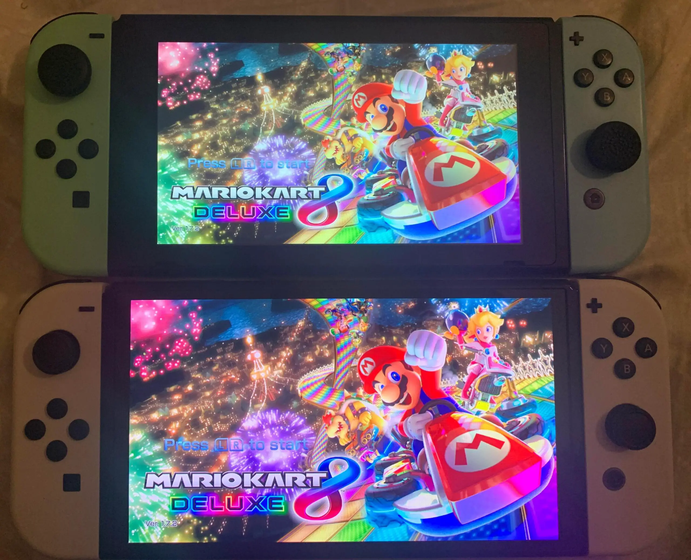
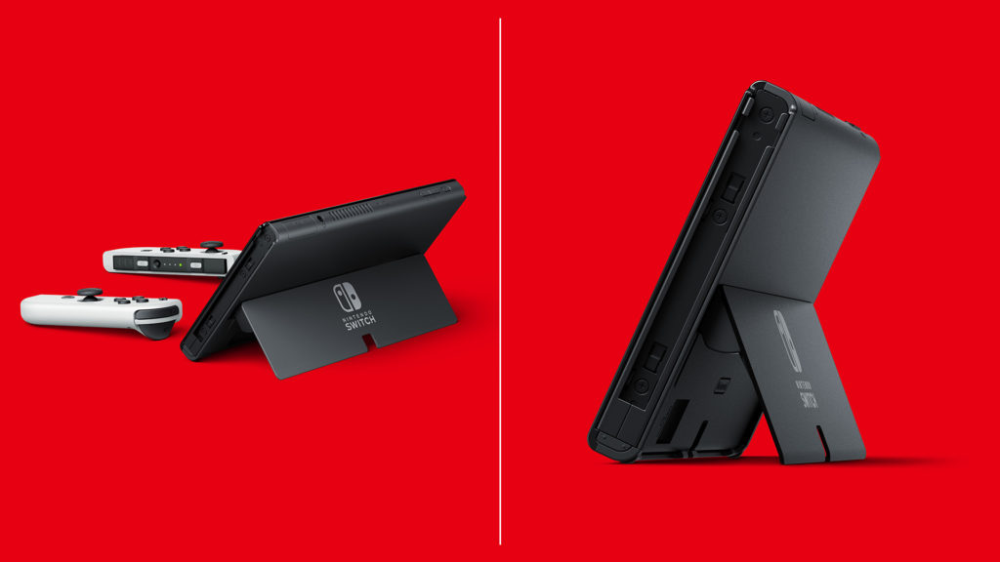

Nintendo Switch OLED: O que você precisa saber
O Nintendo Switch OLED é uma versão atualizada do console híbrido da Nintendo. Ele foi lançado em 8 de outubro de 2021 e apresenta uma série de melhorias em relação ao modelo original, incluindo uma tela OLED maior e mais vibrante, um suporte ajustável e mais armazenamento interno.


Tela OLED
A tela OLED do Nintendo Switch OLED é uma das principais melhorias em relação ao modelo original. Ela tem 7 polegadas, o que é um pouco maior do que a tela de 6,2 polegadas do modelo original. A tela OLED também é mais vibrante e colorida, com pretos mais profundos e cores mais vivas.
Suporte ajustável
O suporte ajustável do Nintendo Switch OLED é outra melhoria significativa. Ele permite que você coloque o console em uma variedade de posições, o que é útil para jogar em um modo de mesa ou em um modo de mesa compartilhado.
No Wallmart está saindo por $349.00
Armazenamento interno
O Nintendo Switch OLED vem com 64 GB de armazenamento interno, o que é o dobro do armazenamento interno de 32 GB do modelo original. Isso significa que você terá mais espaço para armazenar jogos, aplicativos e outros dados.
Outras melhorias
Além dessas melhorias, o Nintendo Switch OLED também apresenta um alto-falante aprimorado, uma porta LAN integrada e um acabamento premium.
Preço e disponibilidade
O Nintendo Switch OLED custa US $ 349,99 nos Estados Unidos. Ele está disponível nas cores branco e preto.
O Nintendo Switch OLED é uma atualização sólida do console original. Ele oferece uma série de melhorias que tornam o console mais agradável de usar. Se você está procurando uma maneira melhor de jogar seus jogos favoritos do Switch, o Nintendo Switch OLED é uma ótima opção.